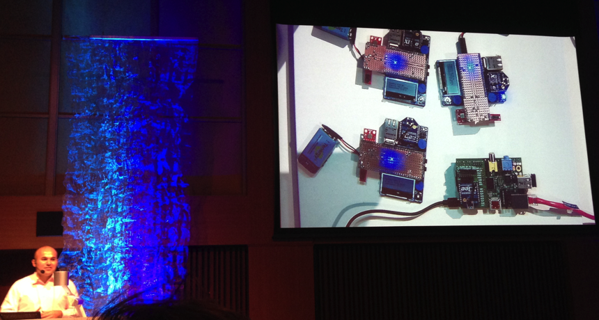
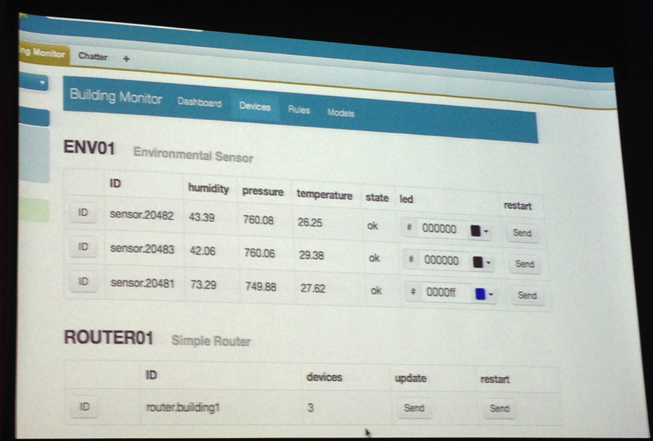
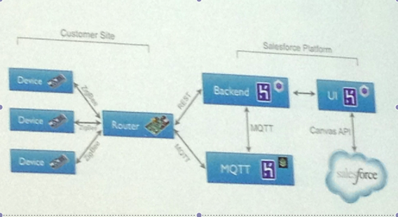

参加報告
Salesforce developer conference Tokyo 2013
2013年9月6日（金）
JPタワーホール＆カンファレンス４F
本カンファレンスではモバイル x クラウドに焦点を当て、HerokuやForce.comを中心としたモバイル開発手法についてのセッションが行われます。
参加したセッション
- THE REINVENTION OF APPS (keynote, マーケティングの話)
- 組込み向けRuby処理系mrubyの可能性 (まつもとゆきひろ Rubyの父、Herokuチーフアーキテクト)
- HeliosとHerokuを使ったiOSアプリの構築 (MBaas on Heroku)
- Herokuを利用したInternet of Things事例 (一番面白いセッション)
- B2Cから見たモバイルアプリケーション開発のいまとこれから (伊藤 直也 氏)
THE REINVENTION OF APPS
force.comはPassからopen platformに変化しつつである。
新規システム構築以外、既存システムの連携を重視する。
現在毎日12億のトランザクションに半分ぐらいAPIからのアクセスである。
なお、本日のテーマはモバイルである。
最新のForce.comバージョンでモバイルアプリをすぐ作成できるようになる。
Chatterでリアタイムで変更を確認できることをデモした。オフラインでもアプリを操作できる。
組込み向けRuby処理系mrubyの可能性
- コードもデモも無し、単純な技術トーク
- コンピュータの歴史を振り返すから、組込みシステム開発の変遷を説明する
- システム開発は目覚ましい進化している一方、組込みシステムの開発は大きく変化していない
- ただ、スマホの普及とともに、ここ2年から組込みシステムの環境も大きく進化しつつである
- 最新の冷蔵庫など32MByteのメモリを持って、ruby実行の環境を整っているか
- アセンブリ、Cなどの敷居が高い組込みシステム開発でOOPのrubyも使えるため、mrubyを開発した
参加者は営業またマーケティングの人が多いので、技術カンファレンスの雰囲気が薄かった
HeliosとHerokuを使ったiOSアプリの構築 (MBaas on Heroku)
- helios, an extensible open-source mobile backend framework
- あと伊藤直也さんの話と絡んでいる。MBaasのフレームワーク・サービスである。
- 開発者Mattt Thompson(米国Heroku在籍)は紹介する
- ユーザ認証登録、データ同期、プッシュ通知、アプリ内購買、ログと分析などのモバイル・アプリバックエンド機能をサービスとして提供する。（一部有料）
- 開発者はUX専念できる環境を整っている。
- Herokuで数分間にバックエンドアプリを作成するデモ
Herokuを利用したInternet of Things事例
- モバイルとクラウドの可能性
- デモ概要
- システム構造
- QA
デモ概要

4センサー(3つは温度、湿度と気圧を計測する、1つはRaspberry Piで通信ルーターとする)
デモ概要

Webアプリにリアルタイムでセンサーの数値を更新して表示する。
デモ概要
- 環境制限でセンサーはwifi機能を持っていない
- FMラジオ帯でルーターに送信する(極端な環境を考える)
- アプリでセンサーの数値をリアルタイムで表示する
- アプリでセンサーの異常をアラートする
- アプリでセンターを再起動できる
システム構造

センサーはZigBeeプロトコルでルーターと通信する
ルーターはMQTTプロトコルでHerokuのAddonと通信し、HerokuのAddonでForceアプリと通信する
QA
- 通信距離、省電力の考え
- セキュリティの考慮（省電力のため、MQTTとZigBeeのメッセージが平文である）
- セキュリティの考慮（センターの有効性チェック）
- 車システムに応用できるか（いいえ、車はスーパーパソコンと思う。組み込み環境の反面と見られる）
B2Cから見たモバイル
アプリケーション開発のいまとこれから
伊藤直也氏(元はてなCTO、GREEプラットフォーム統括事業本部長)
公開されているスライドへのリンク
まとめ
- モバイルとクラウドの融合は加速している
- これからの企業システムにモバイル開発が必須になる
- パッケージ販売ではなく、プラットフォームとしてユーザーにサービスを提供する
- Open sourceの力はますます強くなる。(SalesforceはHerokuを買収することから見える)
- MBaasのような新しいサービスを活発化になる
- どんな時代も短期間かつ低コストでサービスを提供できる方は勝ち組である（自動化でALM管理はHerokuなどのPaasの強みである）